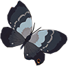

hi, i'm laila!
// web developer, ui/ux designer in montreal
// second year computer science at concordia
// co-op program, intern at autodesk
// passionate about diversity in the engineering community
I’m passionate about all things web, from frontend and backend to UI and
UX design. But I felt like I was focusing too much on the front end and
wanted to explore other things more, so I’m currently also learning
about networks and servers as well as website performance with a
frontend masters course. (LANGUAGES!)
I’m an avid reader. It’s actually kind of a family hobby, my mom
cultivated our love for books since we were young. I’ve read almost 400
books in diverse genres. I've also recently started playing the piano
(my sisters are constantly annoyed by the sound of Final Fantasy and
Kingdom Hearts soundtracks) so I’m really excited about that.